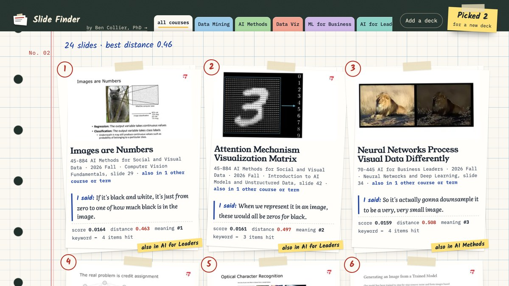
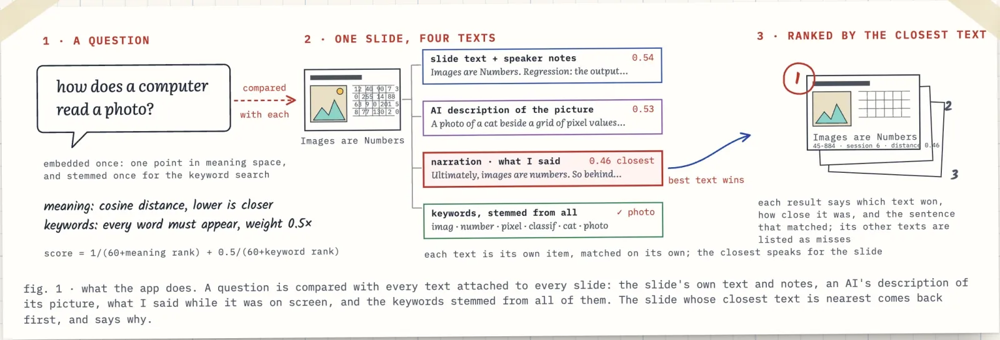
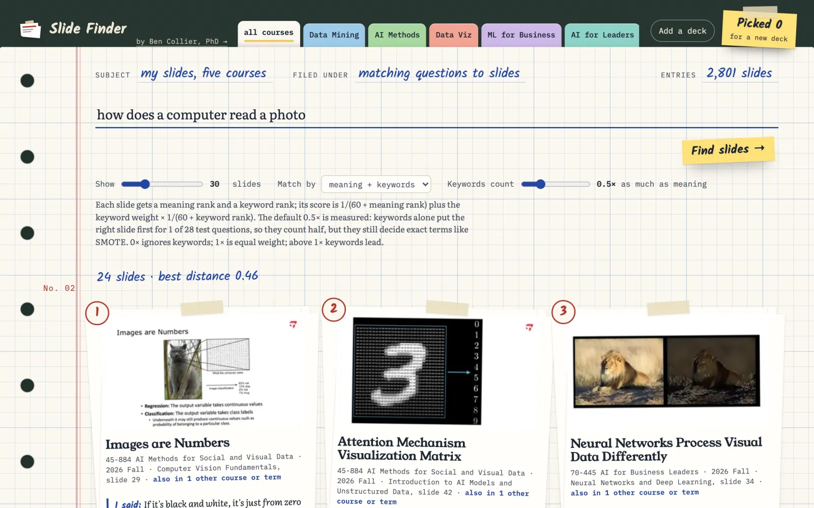
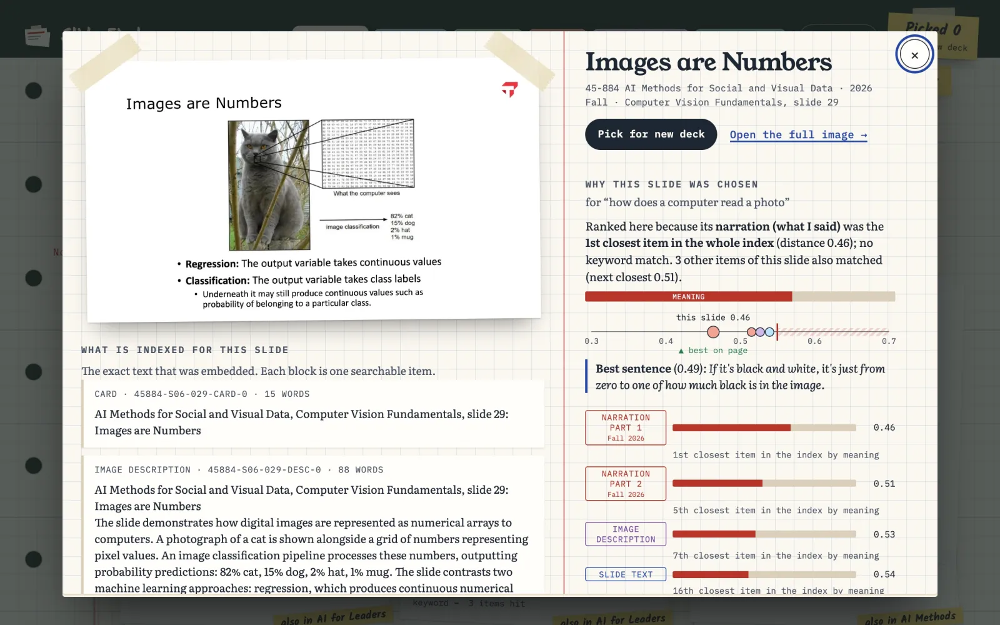
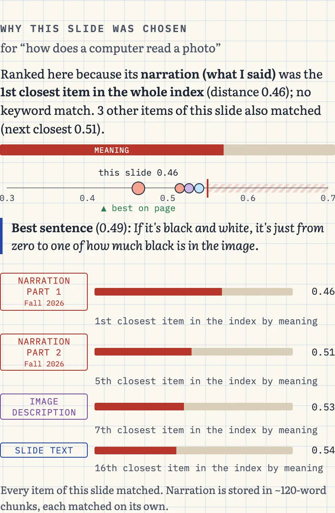
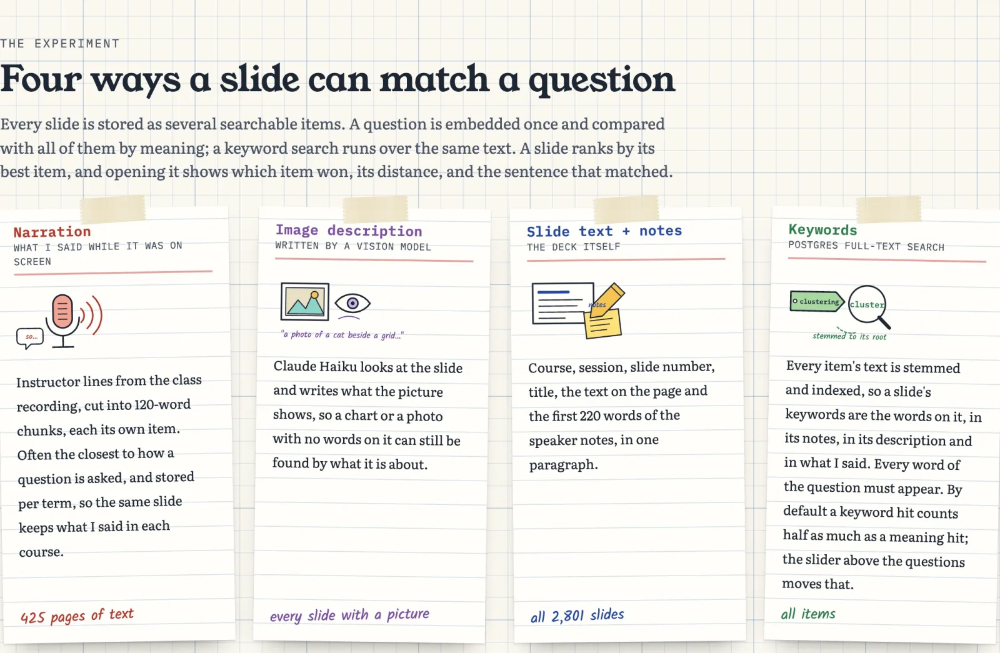

Web app · October 2026
Slide Finder


Python, FastAPI, Supabase Postgres with pgvector, Voyage AI embeddings, Claude Haiku (image descriptions and titles), Vercel, Claude Code
A technical project on one question: how do you match a question to a slide? Every slide I have taught since Fall 2023, across five courses, is indexed four ways in one vector database: what I said in class while it was on screen, an AI's description of its picture, the slide's own text and speaker notes, and plain keywords. Meaning and keyword matches are fused into one ranking, and every result shows which way found it and why. It is my own tool, not a student-facing one; I use it to pull old slides into new decks. Built for Effective Coding with AI (15-113), a Carnegie Mellon course, as the vector database project in Fall 2026.
What it is
Slide Finder is a technical project on one question: how do you match a question to a slide? I type a question the way a student would ask it, and it finds the slides where I taught that idea, from every slide I have taught since Fall 2023 across five courses.

Every slide is stored as several searchable items, each with its own embedding: what I said in class while it was on screen, an AI's description of its picture, the slide's own text and speaker notes, and the keywords stemmed from all of that. A question is embedded once and compared with all of them. Meaning matches and keyword matches are fused into one ranking, and each slide is ranked by its best item.
The same slide comes back year after year, often in a new deck template. Repeats are recognised by the pictures embedded in them, not by how the page looks. 5,623 deck pages became 2,801 unique slides, and each one lists every session that used it.
It is my own tool, not a student-facing one. I use it when I build a new deck and want the slide where I already explained something, whatever course or term it was in.

A tour
Open a slide and you see the full image, the exact text that was embedded for it, and on the right why it was chosen. For "how does a computer read a photo", the winner was a chunk of my narration: "Ultimately, images are numbers." None of the question's words are on the slide.

The "why" panel has a sentence that names the item that ranked the slide, a bar that splits the score into meaning and keywords, a distance gauge with a red line at 0.55 where matches stop being trusted, and a ledger with one row per matched item. The landing page explains the four kinds of item.




Three searches show the edges. A question about overfitting in plain words finds the bias and variance slide through my narration. A question I never taught gets a warning. A short exact term like `mtry` is found by keywords, even though nothing is close by meaning.


How I built it
I built it in Claude Code on October 26, in about six hours. I described the project in my own words first and only gave the agent the assignment page after the spec was drafted. Then it built one step at a time: spec, install and a five-line check, a smoke test that found the slides again in a second process, my real data, a look at the distances, runtime adds, deploy, evaluate. I tested each deployed version in my browser and sent back screenshots when something was wrong.
The stack: Supabase Postgres with pgvector, Voyage AI embeddings, FastAPI and a static page on Vercel. Claude Haiku wrote the image descriptions and read titles off slides whose heading was inside a picture. That runs offline, never in the web app.
About two hours in I switched models. The agent kept recommending Chroma and then wanted to keep it as a second backend "for graders", a constraint nobody gave it. I already pay for Supabase. I told it the recommendations were bad, switched from Claude Opus 5.5 to Claude Fable 5.1, and asked why. Its answer: it had invented a grading rule, kept Chroma out of sunk cost, and kept adding scope instead of cutting it. The design became one backend.
Other things that went wrong, all in the prompt log:
- Appending the image description to each slide's card made results worse. Long cards dilute the slide's own words. Descriptions became their own item.
- pgvector's HNSW index returns at most 40 candidates, so "show 100" gave 24 slides. The vector side became an exact scan, which takes a few milliseconds at under 10,000 items.
- The first duplicate grouping merged different slides that shared a template, then split one slide into a copy per term. Hashing the embedded pictures fixed both.
- The vision pass returned a sentence of prose instead of a title for 32 slides, and the cleanup then shortened 38 real titles that had to be restored.
To check it, I wrote 28 questions the way a student would ask them, each labeled with the slide that answers it. The hybrid search puts a right slide first for 19 of 28 (hit@1 0.68). Keywords alone get 1 of 28. A 15% bonus I added by intuition, for slides matched two ways, dropped hit@1 to 0.57, so it came out. Measuring it was the point. All six off-topic questions got the warning.
Some questions still miss. "It aced the practice problems but bombed the real test" means overfitting, but the embedding reads it as being about exams. Metaphors two steps away from the concept don't land.
The project started because retrieval in my earlier project, Faculty Twin, missed too often, and I wanted to work out how to get it right and prove it with numbers.
Decisions that mattered
- The same slide comes back year after year in a new template, so repeated slides are recognised by the pictures embedded in them, not by how the page renders. 5,623 deck pages became 2,801 unique slides, each listing every term that used it.
- Picture-only slides get a description written by a vision model, stored as its own searchable item, so a slide that is just a chart can still be found by what it shows.
- Keywords are not generated: Postgres stems every item's text into a full-text index, so a slide's keywords are the vocabulary of everything attached to it, including what I said and the description of its picture. They count half as much as meaning, because keywords alone found the right slide first for 1 of 28 labeled questions.
- Each result explains itself: a sentence saying why it ranked, a distance gauge, and the exact sentence of narration or description that matched.